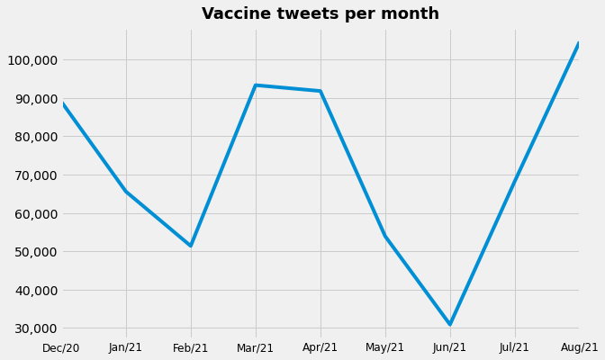
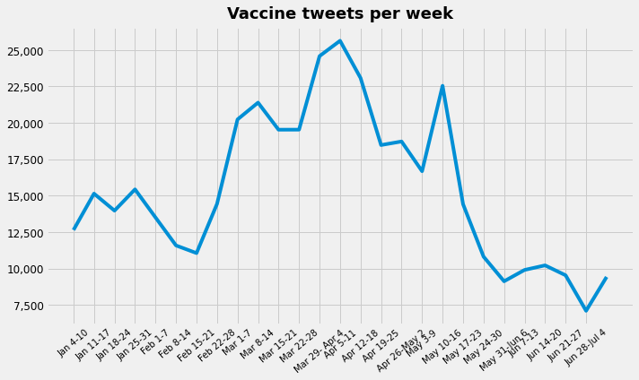
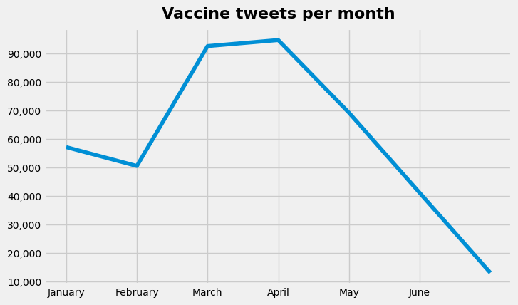

1. Getting tweets using Twitter Academic API¶
Search criteria
Keywords: vaccine, vaccination, moderna, pfizer, #antivax, #CashingInOnCovid, #MyBodyMyChoice, #Vax
Location: US
Retweets: no
Timeframe: December 1, 2020 - September 15, 2021
Language: English
!twarc2 search --start-time "2020-12-01" --end-time "2021-09-15" "(vaccine OR vaccination OR moderna OR pfizer OR #antivax OR #CashingInOnCovid OR #MyBodyMyChoice OR #Vax) lang:en place_country:US -is:retweet" --archive tweets_122020_092021_v2.jsonl
/bin/bash: twarc2: command not found
Number of tweets
December - August: 649,084
January - June: 387,000
Plotting the tweets

/usr/local/lib/python3.7/dist-packages/ipykernel_launcher.py:7: FutureWarning: Series.dt.weekofyear and Series.dt.week have been deprecated. Please use Series.dt.isocalendar().week instead.
import sys
/usr/local/lib/python3.7/dist-packages/ipykernel_launcher.py:7: SettingWithCopyWarning:
A value is trying to be set on a copy of a slice from a DataFrame.
Try using .loc[row_indexer,col_indexer] = value instead
See the caveats in the documentation: https://pandas.pydata.org/pandas-docs/stable/user_guide/indexing.html#returning-a-view-versus-a-copy
import sys
2. Getting tweets using Snscrape library¶
Search criteria
Keywords: vaccine, vaccination, vaccinate, vaccinated, vax, vaccinating, vaccines
Location: US (with coordinates)
Retweets: no
Timeframe: January 1 - June 30
Language: English
Number of tweets January - June: 863,443
# %pwd
tweets_sns.shape
(863443, 24)
Plotting the tweets

